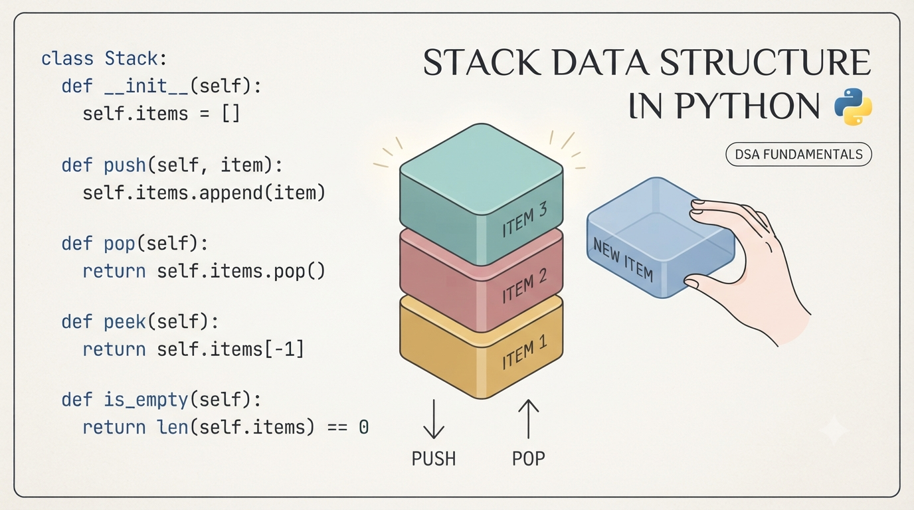
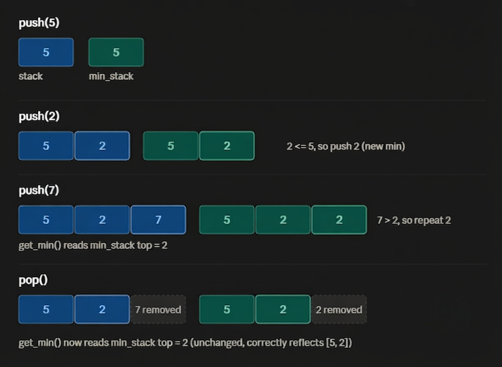
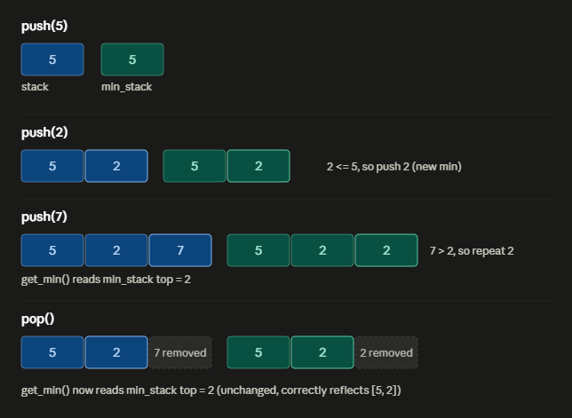
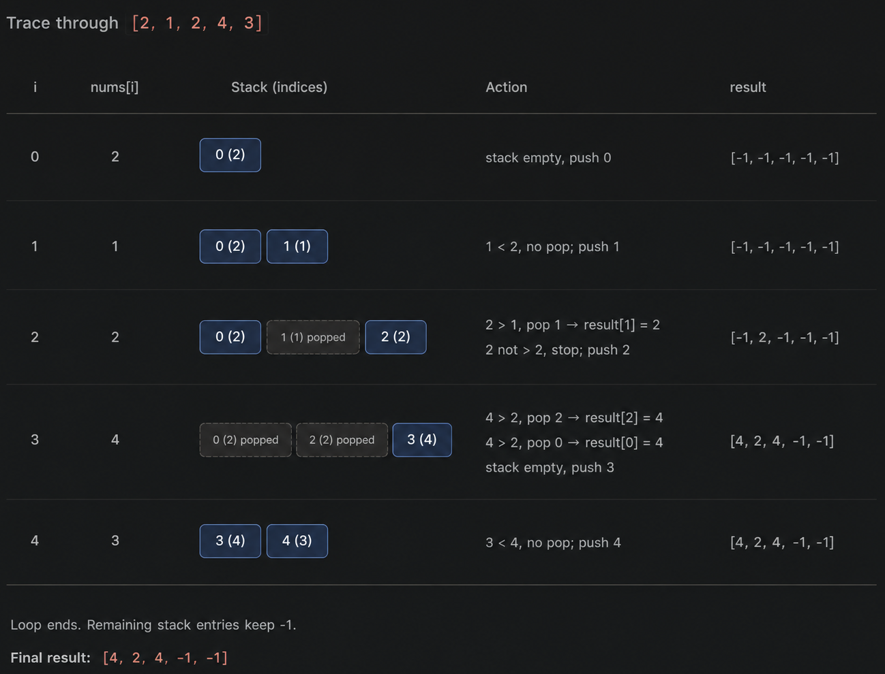
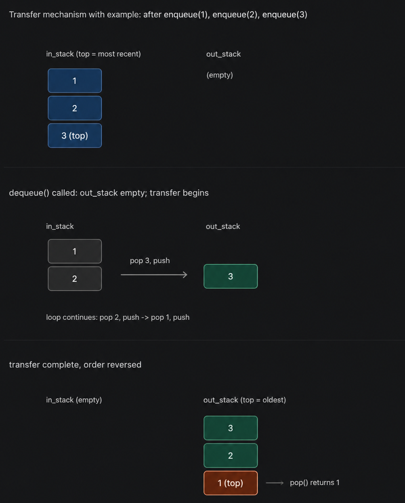

Stack Data Structure in Python – Complete Tutorial with Examples
Learn the Stack data structure in Python with this complete, beginner-friendly guide covering LIFO (Last In, First Out) principles, real-world use cases, and hands-on coding examples. This Python stack tutorial walks you through three implementation methods - using a Python list, collections.deque, and a custom linked list stack - along with time and space complexity for each core operation (push, pop, peek, is_empty, size).

Designed for both beginners and developers preparing for technical interviews, this tutorial covers:
- Core Concepts & Architecture: Clear real-world analogies (like a stack of cafeteria plates) and system use cases (such as the call stack, browser history, and undo features).
- Implementations: Step-by-step code examples using Python's built-in list, collections.deque, and a custom Linked List from scratch.
- Real-World Applications: Practical solutions for valid parentheses, text editor undo features, and Reverse Polish Notation (RPN) evaluation.
- Interview Prep & Patterns: etailed walkthroughs of classic problems-including Min Stack, Monotonic Stack patterns, and Largest Rectangle in Histogram-along with a structured practice roadmap.
Table of Contents
Introduction
1. What Is Stack?
A Stack is a linear data structure that follows LIFO - Last In, First Out. The most recently added element is always the first one removed.
Real-World Analogy: A stack of plates in a cafeteria. You place new plates on top, and when someone needs a plate, they take it from the top - never from the bottom or middle. To reach the bottom plate, every plate above it must be removed first.

Real systems/software that use stacks internally:
- Call stack: every programming language uses this to manage function calls and recursion.
- Undo/Redo: text editors, Photoshop, IDEs (Ctrl+Z).
- Browser history: the back button.
- Compilers/interpreters: syntax parsing, matching brackets, expression evaluation.
- DFS traversal: depth-first search in trees and graphs (either via recursion, which uses the call stack, or an explicit stack).
- Memory management: stack memory allocation for local variables.
2. Core Operations & Complexity
| Operation | Description | Time Complexity | Space Complexity |
|---|---|---|---|
push(x) |
Add element x to the top | O(1) | O(1) |
pop() |
Remove and return the top element | O(1) | O(1) |
peek() / top() |
View the top element without removing it | O(1) | O(1) |
is_empty() |
Check if the stack has no elements | O(1) | O(1) |
size() |
Return count of elements | O(1) | O(1) |
| Overall structure | -- | -- | O(n) for n elements |
3. Implementation
Method A: Using a Python list (most common)
Python
class Stack:
def __init__(self):
self.items = []
def push(self, item):
self.items.append(item) # Adds item to the top
def pop(self):
if self.is_empty():
raise IndexError("pop from empty stack")
return self.items.pop() # Removes and returns top item
def peek(self):
if self.is_empty():
raise IndexError("peek from empty stack")
return self.items[-1] # Looks at top item without removing
def is_empty(self):
return len(self.items) == 0 # True if stack is empty
def size(self):
return len(self.items) # Returns total count of items
# --- Testing the Stack ---
s = Stack()
s.push(10) # Stack is now [10]
s.push(20) # Stack is now [10, 20]
s.push(30) # Stack is now [10, 20, 30]
print(s.peek()) # Output: 30 (looks at the top item)
print(s.pop()) # Output: 30 (removes 30 from the top)
print(s.size()) # Output: 2 (only 10 and 20 remain)
Detailed Method Breakdown
__init__(self): Creates an empty list (self.items) whenever a new Stack object is created.push(self, item): Appends an item to the end of the list. This operates in $O(1)$ time.pop(self): Checks if the stack is empty first (raising an error if it is), then removes and returns the last item using.pop(). This operates in $O(1)$ time.peek(self): Returns the last element in the list (self.items[-1]) without deleting it.is_empty(self): ReturnsTrueif the stack contains no elements, otherwiseFalse.size(self): Returns the count of items in the stack using thelen()function.
Why the end of the list, not the beginning?
list.append() and list.pop() are O(1). If you used insert(0, x) and pop(0) instead, they'd be O(n) because every other element has to shift.
Method B: Using collections.deque (preferred for performance)
Python
from collections import deque
# Create an empty stack using deque
stack = deque()
# Push items onto the stack
stack.append(10) # Adds 10
stack.append(20) # Adds 20
stack.append(30) # Adds 30
# Pop the top item (LIFO - Last In, First Out)
print(stack.pop()) # Removes and prints 30
# Peek at the new top item without removing it
print(stack[-1]) # Prints 20
deque is implemented as a doubly linked list internally, giving guaranteed O(1) appends/pops from both ends, slightly faster and safer than a plain list for stack-heavy workloads.
Method C: Using queue.LifoQueue (thread-safe, preferred for concurrent applications)
Python
from queue import LifoQueue
# Initialize a thread-safe LIFO (Last-In, First-Out) queue with a max size of 3
stack = LifoQueue(3)
# Put elements into the stack
stack.put(10)
stack.put(20)
stack.put(30)
# Get (remove and return) elements out of the stack
print(stack.get()) # Removes and prints 30
print(stack.get()) # Removes and prints 20
LifoQueue is implemented as a thread-safe queue internally, giving guaranteed O(1) appends/pops from both ends, slightly faster and safer than a plain list for stack-heavy workloads.
4. Real-World Practical Problems
Problem 1: Valid Parentheses / Bracket Matching
Use case: Compilers, linters, and JSON/XML parsers all need to verify that brackets, braces, and tags are properly nested and closed.
Python
def is_valid(expression: str) -> bool:
stack = []
pairs = {')': '(', ']': '[', '}': '{'}
for char in expression:
if char in '([{':
stack.append(char) # Opening bracket - remember it
elif char in ')]}':
# A closing bracket must match the MOST RECENT opening
# bracket - this is exactly why LIFO fits this problem.
if not stack or stack[-1] != pairs[char]:
return False
stack.pop()
return len(stack) == 0 # Nothing left unmatched
# --- Testing the Function ---
print(is_valid("([{}])")) # Output: True
print(is_valid("([)]")) # Output: False - wrong nesting order
Step-by-Step Explanation
What the program does
It checks if the brackets (), [], {} in a string are balanced - meaning every opening bracket has a matching closing bracket, and they close in the right order (like nested boxes: the last box you opened must be the first one you close).
Step 1: Set up two helpers
stack = []
pairs = {')': '(', ']': '[', '}': '{'}
stack- an empty list. We'll use it like a stack of plates: you can only add or remove from the top.pairs- a dictionary that says "this closing bracket belongs to this opening bracket." For example,)belongs to(.
Step 2: Go through the string one character at a time
for char in s:
We look at each character in the input string, left to right, one at a time.
Step 3: If it's an opening bracket, save it
if char in '([{':
stack.append(char)
- If the character is
(,[, or{, we push it onto the stack - just place it on top. - This means: "remember this bracket is open and still waiting to be closed."
Step 4: If it's a closing bracket, check it matches
elif char in ')]}':
if not stack or stack[-1] != pairs[char]:
return False
stack.pop()
If the character is ), ], or }, we need to check if it correctly closes the most recent open bracket.
stack[-1]means "look at the top item of the stack" (the most recently opened bracket).- Two ways this can go wrong:
not stack- the stack is empty, meaning there's no open bracket at all to close. Example: seeing)with nothing opened yet.stack[-1] != pairs[char]- the top of the stack doesn't match. Example: top is[but we're trying to close with).
- If either problem happens → return
Falseimmediately. The string is invalid. - If it matches correctly →
stack.pop()removes that opening bracket from the stack, since it's now properly closed.
Step 5: After checking the whole string, check if anything's left open
return len(stack) == 0
- If the stack is empty at the end, every bracket that was opened also got closed properly → return
True. - If anything is still sitting in the stack, it means some bracket was opened but never closed → return
False.
Step 6: Run some tests
print(is_valid("([{}])")) # True
print(is_valid("([)]")) # False
Trace 1: "([{}])"
| Step | char | What happens | Stack |
|---|---|---|---|
| 1 | ( |
opening → push | ( |
| 2 | [ |
opening → push | ( [ |
| 3 | { |
opening → push | ( [ { |
| 4 | } |
closing → matches top { → pop |
( [ |
| 5 | ] |
closing → matches top [ → pop |
( |
| 6 | ) |
closing → matches top ( → pop |
(empty) |
End of string → stack is empty → True
Trace 2: "([)]"
| Step | char | What happens | Stack |
|---|---|---|---|
| 1 | ( |
opening → push | ( |
| 2 | [ |
opening → push | ( [ |
| 3 | ) |
closing → top is [, but ) needs ( → mismatch → return False right away |
- |
Stops immediately → False
One-line summary
Every time you open a bracket, remember it on top of a pile; every time you close one, it must match whatever's on top of that pile - if it doesn't match, or the pile's empty, the string is invalid.
Problem 2: Undo Feature in a Text Editor
Use case: Every "Ctrl+Z" in Word, VS Code, or Photoshop works by storing previous states on a stack.
Python
class TextEditor:
def __init__(self):
self.text = ""
self.history = [] # Stack to store previous states
def type_text(self, chars):
self.history.append(self.text) # Save state BEFORE the change
self.text += chars
def undo(self):
if not self.history:
print("Nothing to undo")
return
self.text = self.history.pop() # Restore the most recent state
# --- Testing the Text Editor ---
editor = TextEditor()
editor.type_text("Hello")
editor.type_text(" World")
print(editor.text) # Output: Hello World
editor.undo()
print(editor.text) # Output: Hello
Step-by-Step Explanation
What the program does
This is a mini text editor with an undo button - like typing in Notepad and pressing Ctrl+Z. Every time you type something, it quietly remembers what the text looked like just before, so it can bring that back later.
Step 1: Set up the starting point
def __init__(self):
self.text = ""
self.history = []
self.text- starts as an empty string (nothing typed yet).self.history- starts as an empty list. This will act like a pile of saved snapshots, one for each change made.
Step 2: Typing - save first, then change
def type(self, chars):
self.history.append(self.text)
self.text += chars
- Before adding anything new, we save the current text onto the history pile - a snapshot of "this is what it looked like right before this change."
- Then we add the new characters (
chars) onto the end of the text. - Order matters here: save first, change second. If you did it the other way around, you'd end up saving the already-changed text, and undo would do nothing.
Step 3: Undo - grab the last snapshot back
def undo(self):
if self.history:
self.text = self.history.pop()
else:
print("Nothing to undo")
if self.history:checks if the pile has anything in it. An empty list is treated as "false" in Python, so this is really asking "is there anything saved?"- If yes:
self.history.pop()removes and returns the most recently saved snapshot - the last thing put on top of the pile - and we setself.textback to that value. - If no: there's nothing to go back to, so it just prints a message instead of crashing or doing something wrong.
Step 4: Running it - trace through what happens
| Action / Code | What happens | Text (self.text) |
History Stack (self.history) |
|---|---|---|---|
editor = TextEditor() |
Initial state | "" |
[] |
editor.type("Hello") |
Save current text "" onto history, then add "Hello" |
"Hello" |
[""] |
editor.type(" World") |
Save current text "Hello" onto history, then add " World" |
"Hello World" |
["", "Hello"] |
print(editor.text) |
Prints exactly what we expect - both typed pieces are now joined together (# "Hello World") |
"Hello World" |
["", "Hello"] |
editor.undo() |
History is not empty, so pop the last item off ("Hello") and restore self.text |
"Hello" |
[""] |
print(editor.text) |
Confirms the undo worked - back to how things looked before the second type() call (# "Hello") |
"Hello" |
[""] |
Why a stack (last-in, first-out) fits perfectly
Undo always needs to go back to the most recent change first, not the oldest one. Since a stack always gives you the last thing you added when you ask for something back, it naturally matches how undo is supposed to behave - one step back at a time, most recent first.
One-line summary
Before every change, save a snapshot on top of the history pile; undo just grabs the most recent snapshot off that pile and restores it - no pile, no undo.
Problem 3: Evaluate Reverse Polish Notation (Calculator Logic)
Use case: Calculators and some interpreters evaluate expressions this way because it avoids needing operator precedence or parentheses at all.
Python
def eval_rpn(tokens):
stack = []
for token in tokens:
if token in ('+', '-', '*', '/'):
b = stack.pop()
a = stack.pop()
if token == '+':
stack.append(a + b)
elif token == '-':
stack.append(a - b)
elif token == '*':
stack.append(a * b)
else:
stack.append(int(a / b)) # truncate toward zero
else:
stack.append(int(token))
return stack[0]
print(eval_rpn(["2", "1", "+", "3", "*"])) # (2+1)*3 = 9
Step-by-Step Explanation
What the program does
RPN (postfix notation) writes operators after their operands, e.g., "2 1 + 3 *" means (2 + 1) * 3. You can evaluate it with a single stack: push numbers, and when you hit an operator, pop the last two numbers, apply the operator, and push the result back.
Step 1: Initialize an empty stack
stack = []
stack- an empty list that holds numbers waiting to be combined.
Step 2: Loop through each token in the input list
for token in tokens:
- Tokens are strings - either numbers (like
"2","3") or operators (like"+","-","*","/").
Step 3: Check if the token is an operator
if token in ('+', '-', '*', '/'):
Step 4: If it's an operator, pop the top two values
b = stack.pop() # popped first -> this is the RIGHT-hand operand
a = stack.pop() # popped second -> this is the LEFT-hand operand
- Order matters here: since a stack is Last-In, First-Out (LIFO), the most recently pushed number (
b) is the second operand, and the one before it (a) is the first operand. - This is crucial for non-commutative operations like subtraction (
-) and division (/).
Step 5: Apply the operator and push the result
if token == '+':
stack.append(a + b)
elif token == '-':
stack.append(a - b)
elif token == '*':
stack.append(a * b)
else:
stack.append(int(a / b)) # truncate toward zero
- For division, regular Python integer division (
//) rounds toward negative infinity. - Using
int(a / b)does float division first and then truncates toward zero (e.g.,-7 / 2 = -3instead of-4), which matches standard RPN problem specifications.
Step 6: If the token is a number, convert and push it
else:
stack.append(int(token))
- Tokens arrive as strings, so
int(token)converts string values into integers (e.g.,"2"→2).
Step 7: Return the final answer
return stack[0]
- At the end of a valid expression, there should be exactly one element left on the stack.
Trace through the example
Tokens: ["2", "1", "+", "3", "*"]
| Token | Action | Stack after |
|---|---|---|
"2" |
push 2 |
[2] |
"1" |
push 1 |
[2, 1] |
"+" |
pop 1, pop 2 → 2 + 1 = 3 → push 3 |
[3] |
"3" |
push 3 |
[3, 3] |
"*" |
pop 3, pop 3 → 3 * 3 = 9 → push 9 |
[9] |
Final result: stack[0] = 9 → matches (2 + 1) * 3 = 9.
Note on robustness
This version assumes well-formed input (exactly one leftover value, valid tokens). It doesn't handle errors like division by zero, malformed tokens, or an empty/invalid expression - for production code, you might want try/except blocks around pops and conversions.
Problem 4: Browser Back/Forward Navigation
Use case: This is literally how browser history works - two stacks track where you've been and where you can go forward to.
Python
class BrowserHistory:
def __init__(self, homepage):
self.back_stack = []
self.forward_stack = []
self.current = homepage
def visit(self, url):
self.back_stack.append(self.current)
self.current = url
self.forward_stack.clear() # visiting a new page erases forward history
def back(self):
if self.back_stack:
self.forward_stack.append(self.current)
self.current = self.back_stack.pop()
return self.current
def forward(self):
if self.forward_stack:
self.back_stack.append(self.current)
self.current = self.forward_stack.pop()
return self.current
browser = BrowserHistory("home.com")
browser.visit("google.com")
browser.visit("github.com")
print(browser.back()) # google.com
print(browser.back()) # home.com
print(browser.forward()) # google.com
Step-by-Step Explanation
What the program does
A browser's back/forward history behaves like two stacks: one for pages you can go back to, and one for pages you can go forward to (pages you've stepped back from). Visiting a new page always wipes the forward stack → you can't go "forward" to a page after taking a new path.
Step 1: Constructor - set up initial state
def __init__(self, homepage):
self.back_stack = []
self.forward_stack = []
self.current = homepage
back_stack- holds pages visited before the current one, in order.forward_stack- holds pages you've navigated back away from, so you can redo them.current- simply the page you're on right now.
Step 2: visit(url) - go to a new page
def visit(self, url):
self.back_stack.append(self.current)
self.current = url
self.forward_stack.clear()
- Push the page you're leaving onto
back_stack(so you can return to it later). - Update
currentto the new URL. - Clear
forward_stack→ once you visit a new page, any old "forward" history becomes invalid (just like a real browser).
Step 3: back() - go to the previous page
def back(self):
if self.back_stack:
self.forward_stack.append(self.current)
self.current = self.back_stack.pop()
return self.current
- Only act if there's something to go back to (
back_stackisn't empty). - Push the current page onto
forward_stack(soforward()can undo this). - Pop the most recent page off
back_stackand make itcurrent. - Return
currenteither way (unchanged if there's nowhere to go back to).
Step 4: forward() - redo a page you went back from
def forward(self):
if self.forward_stack:
self.back_stack.append(self.current)
self.current = self.forward_stack.pop()
return self.current
- Mirror image of
back(): only act ifforward_stackhas entries. - Push current page onto
back_stack(so you could go back to it again). - Pop from
forward_stackand make itcurrent.
Trace through the example
browser = BrowserHistory("home.com")
- Action: Initialize starting page
- State:
back_stack:[]|forward_stack:[]|current:"home.com"
browser.visit("google.com")
- Action: Push
"home.com"toback_stack, setcurrent = "google.com", clearforward_stack. - State:
back_stack:["home.com"]|forward_stack:[]|current:"google.com"
browser.visit("github.com")
- Action: Push
"google.com"toback_stack, setcurrent = "github.com", clearforward_stack. - State:
back_stack:["home.com", "google.com"]|forward_stack:[]|current:"github.com"
print(browser.back()) # google.com
- Action:
back_stackis non-empty → push"github.com"toforward_stack, pop"google.com"offback_stack, set ascurrent. - State:
back_stack:["home.com"]|forward_stack:["github.com"]|current:"google.com" - Output:
"google.com"
print(browser.back()) # home.com
- Action: Push
"google.com"toforward_stack, pop"home.com"offback_stack. - State:
back_stack:[]|forward_stack:["github.com", "google.com"]|current:"home.com" - Output:
"home.com"
print(browser.forward()) # google.com
- Action:
forward_stacknon-empty → push"home.com"toback_stack, pop"google.com"offforward_stack. - State:
back_stack:["home.com"]|forward_stack:["github.com"]|current:"google.com" - Output:
"google.com"
Key design points
• Two stacks model directional history cleanly: back_stack = "where I've been," forward_stack = "where I stepped back from."
• visit() clearing forward_stack is what makes this behave like a real browser → you can't redo into a page that a new navigation has made obsolete.
• Both back() and forward() guard with an if so calling them with empty stacks is a safe no-op (just returns the unchanged current), rather than raising an IndexError.
5. Interview Questions
These come up frequently in coding interviews. Difficulty increases as you go down the list.
Q1: Min Stack (Medium - very common)
Design a stack that supports push, pop, top, and get_min() - all in O(1) time.
Key idea: Keep a second stack that tracks the minimum at each point.
Python
class MinStack:
def __init__(self):
self.stack = []
self.min_stack = [] # Tracks the minimum value at each level
def push(self, val):
self.stack.append(val)
# If min_stack is empty or new value is smaller/equal, push it to min_stack
if not self.min_stack or val <= self.min_stack[-1]:
self.min_stack.append(val)
else:
# Otherwise, duplicate the current minimum
self.min_stack.append(self.min_stack[-1])
def pop(self):
self.stack.pop()
self.min_stack.pop() # Keep min_stack in sync with the main stack
def top(self):
return self.stack[-1]
def get_min(self):
return self.min_stack[-1]
# --- Testing the MinStack ---
ms = MinStack()
ms.push(5)
ms.push(2)
ms.push(7)
print(ms.get_min()) # Output: 2
ms.pop()
print(ms.get_min()) # Output: 2
Step-by-Step Explanation
What the program does
A normal stack doesn't let you find the minimum value in O(1) time - you'd have to scan the whole stack. MinStack fixes this by keeping a second, parallel stack (min_stack) that tracks the minimum-so-far at every level. Every time you push or pop from stack, you push or pop from min_stack too, so both stacks always stay the same height.
Step 1: Constructor - two empty stacks
def __init__(self):
self.stack = []
self.min_stack = []
stack- holds the actual values.min_stack- holds, at each positioni, the minimum of all values fromstack[0]tostack[i].
Step 2: push(val) - add a value to both stacks
def push(self, val):
self.stack.append(val)
if not self.min_stack or val <= self.min_stack[-1]:
self.min_stack.append(val)
else:
self.min_stack.append(self.min_stack[-1])
- Always push
valontostack. - For
min_stack: if it's empty, orvalis smaller than (or equal to) the current minimum, pushvalitself - it's the new minimum. - Otherwise, push a copy of the current minimum again. This keeps
min_stackthe same length asstack, somin_stack[-1]always reflects the minimum "at this point in time."
Step 3: pop() - remove from both stacks together
def pop(self):
self.stack.pop()
self.min_stack.pop()
- Popping removes the top of both stacks in lockstep. Because
min_stack[-1]was the minimum including the value just removed, popping it automatically "reveals" the correct minimum for the smaller stack underneath - no recalculation needed.
Step 4: top() - peek at the current value
def top(self):
return self.stack[-1]
Step 5: get_min() - O(1) minimum lookup
def get_min(self):
return self.min_stack[-1]
This is the whole point of the design: no scanning, just read the top of min_stack.

Trace through the example
ms = MinStack()
ms.push(5) # stack=[5] min_stack=[5]
ms.push(2) # stack=[5,2] min_stack=[5,2] (2 <= 5, so 2 is new min)
ms.push(7) # stack=[5,2,7] min_stack=[5,2,2] (7 > 2, so repeat 2)
print(ms.get_min()) # reads min_stack[-1] -> 2
ms.pop() # stack=[5,2] min_stack=[5,2] (both 7 and its paired 2 removed)
print(ms.get_min()) # reads min_stack[-1] -> 2
Notice the top of each stack - that's always what top() and get_min() read from.
Why it works
The trick is that min_stack remembers the minimum "as of" each push, not just one global minimum:
• When you push a smaller-or-equal value, that value becomes the new minimum, so it gets recorded.
• When you push a larger value, the minimum doesn't change, so the same minimum gets recorded again - just to keep min_stack synchronized in length with stack.
• When you pop(), you're removing the top of both stacks together. Since min_stack[-1] represented "the min including the popped element," removing it automatically exposes the correct minimum for whatever's left - no recomputation needed.
Complexity
| Operation | Time | Space |
|---|---|---|
push |
O(1) | - |
pop |
O(1) | - |
top |
O(1) | - |
get_min |
O(1) | - |
Overall space is O(n) since min_stack grows in lockstep with stack - that's the trade-off for making get_min() instant instead of an O(n) scan.
Q2: Next Greater Element (Medium - "Monotonic Stack" pattern)
For each element in an array, find the next element to its right that is greater. If none exists, use -1.
Python
def next_greater_element(nums):
result = [-1] * len(nums)
stack = [] # stores indices, kept in decreasing value order
for i in range(len(nums)):
while stack and nums[stack[-1]] < nums[i]:
idx = stack.pop()
result[idx] = nums[i]
stack.append(i)
return result
print(next_greater_element([2, 1, 2, 4, 3]))
# [4, 2, 4, -1, -1]
Step-by-Step Explanation
What the program does
For each number, we want to find the first number to its right that's bigger. Brute force would be O(n²) - for every element, scan rightward. This solution does it in O(n) using a monotonic decreasing stack: it stores indices of numbers that are still "waiting" for a greater number to appear.
Step 1: Initialize result array and stack
result = [-1] * len(nums)
stack = []
result- starts as all-1(the default when no greater element exists).stack- holds indices (not values), maintained so the values at those indices are always in decreasing order from bottom to top.
Step 2: Loop through each index
for i in range(len(nums)):
Step 3: While the current number beats the stack's top value, resolve it
while stack and nums[stack[-1]] < nums[i]:
idx = stack.pop()
result[idx] = nums[i]
- Peek at the index on top of the stack (
stack[-1]) and compare its value to the current number. - If the current number is bigger, that index has found its "next greater element" - pop it and record
nums[i]as its answer. - Keep popping as long as the current number beats the new top - one new number can resolve multiple waiting indices at once.
Step 4: Push the current index
stack.append(i)
Once no more indices can be resolved by nums[i], push i itself onto the stack - it now waits for something bigger to come later.
Step 5: Return the result
return result
Any index still on the stack when the loop ends never found a greater element, so it keeps its -1.

Q3: Implement a Queue Using Two Stacks (Medium - classic)
Shows you understand how LIFO can simulate FIFO.
Python
def next_greater_element(nums):
result = [-1] * len(nums)
stack = [] # stores indices, kept in decreasing value order
for i in range(len(nums)):
while stack and nums[stack[-1]] < nums[i]:
idx = stack.pop()
result[idx] = nums[i]
stack.append(i)
return result
print(next_greater_element([2, 1, 2, 4, 3]))
# [4, 2, 4, -1, -1]
Step-by-Step Explanation
Overall idea
A stack is LIFO (last-in-first-out), but a queue needs FIFO (first-in-first-out). The trick: use two stacks together.
in_stack- where new elements are pushed as they arrive.out_stack- where elements are popped from to servedequeue().
Since a stack reverses order once, and reversing twice restores the original order, moving everything from in_stack to out_stack (one pop-push at a time) flips the order back to FIFO.
Step 1: Constructor - two empty stacks
def __init__(self):
self.in_stack = []
self.out_stack = []
Step 2: enqueue(x) - always push to in_stack
def enqueue(self, x):
self.in_stack.append(x)
This is O(1) - new elements just pile onto in_stack, most recent on top.
Step 3: dequeue() - pop from out_stack, refilling it if needed
def dequeue(self):
if not self.out_stack:
while self.in_stack:
self.out_stack.append(self.in_stack.pop())
if not self.out_stack:
raise IndexError("dequeue from empty queue")
return self.out_stack.pop()
- Only refill
out_stackwhen it's empty: Ifout_stackstill has elements, they're already in the correct FIFO order - no need to touchin_stack. - The transfer loop reverses order: Popping everything off
in_stack(which pops most-recently-enqueued first) and pushing it ontoout_stackflips it, so the oldest enqueued element ends up on top ofout_stack. - If both stacks are empty: The queue truly has nothing left - raise an error.
- Pop and return: The top of
out_stack- that's the oldest remaining element.

Trace through the example
q = QueueUsingStacks()
q.enqueue(1) # in_stack=[1]
q.enqueue(2) # in_stack=[1,2]
q.enqueue(3) # in_stack=[1,2,3] out_stack=[]
print(q.dequeue())
# out_stack is empty -> transfer everything:
# pop 3 from in_stack, push to out_stack -> out_stack=[3]
# pop 2 from in_stack, push to out_stack -> out_stack=[3,2]
# pop 1 from in_stack, push to out_stack -> out_stack=[3,2,1]
# in_stack is now empty
# pop from out_stack -> returns 1 (the oldest element, as FIFO requires)
After this call: in_stack = [], out_stack = [3, 2]. A second dequeue() would return 2 immediately (no transfer needed, since out_stack isn't empty), and a third would return 3.
Q4: Largest Rectangle in Histogram (Hard)
Given bar heights, find the area of the largest rectangle that fits under the histogram. This is the "boss level" monotonic stack question - once you can solve this, you've mastered the pattern.
Python
def largest_rectangle_area(heights):
stack = [] # stores indices, increasing height order
max_area = 0
heights.append(0) # sentinel to flush remaining stack at the end
for i, h in enumerate(heights):
while stack and heights[stack[-1]] > h:
height = heights[stack.pop()]
width = i if not stack else i - stack[-1] - 1
max_area = max(max_area, height * width)
stack.append(i)
return max_area
print(largest_rectangle_area([2, 1, 5, 6, 2, 3])) # 10
Step-by-Step Explanation
Overall idea
Given a histogram of bar heights, find the largest rectangle that fits entirely within the bars. The brute-force approach checks every pair of left/right boundaries - O(n²). This solution uses a monotonic increasing stack of indices to compute it in O(n).
Step 1: Setup
stack = []
max_area = 0
heights.append(0) # sentinel
stack- holds indices of bars in increasing height order - every bar on the stack is taller than the one below it.- The sentinel
0appended at the end guarantees that, by the final iteration, everything still on the stack gets forced to pop and resolve - no leftover bars.
Step 2: Loop through every bar (including the sentinel)
for i, h in enumerate(heights):
Step 3: Pop and resolve while the current bar is shorter than the stack's top
while stack and heights[stack[-1]] > h:
height = heights[stack.pop()]
width = i if not stack else i - stack[-1] - 1
max_area = max(max_area, height * width)
heights[stack[-1]] > hmeans the bar on top of the stack can't extend any further right - bariis too short to continue its rectangle.- Pop it. Its height is just its own height.
- Its width is the distance between the new stack top (the nearest shorter bar to its left) and
i(the nearest shorter bar to its right), minus 1. If the stack becomes empty, that bar was the shortest seen so far, so it stretches all the way from index0toi. - Update
max_areaif this rectangle beats the current best.
Step 4: Push the current index
stack.append(i)
Once nothing shorter remains on top, i joins the stack, waiting to be resolved later.
Step 5: Return the answer
return max_area
The dashed outline shows the winning rectangle: it's capped at height 5 (the shorter of the two bars it spans) and stretches across bar indices 2 and 3 - width 2 - giving area 10.
Trace through the stack
heights = [2, 1, 5, 6, 2, 3, 0] (sentinel 0 appended)
| i | h | Action | Popped (height, width, area) | stack after | max_area |
|---|---|---|---|---|---|
| 0 | 2 | push | - | [0] |
0 |
| 1 | 1 | heights[0]=2 > 1 → pop |
(2, 1, 2) | [1] |
2 |
| 2 | 5 | push | - | [1,2] |
2 |
| 3 | 6 | push | - | [1,2,3] |
2 |
| 4 | 2 | heights[3]=6>2 → pop |
(6, 1, 6) | [1,2] |
6 |
| 4 | 2 | heights[2]=5>2 → pop |
(5, 2, 10) | [1] |
10 |
| 4 | 2 | heights[1]=1 not >2 → stop, push |
- | [1,4] |
10 |
| 5 | 3 | push | - | [1,4,5] |
10 |
| 6 | 0 | heights[5]=3>0 → pop |
(3, 1, 3) | [1,4] |
10 |
| 6 | 0 | heights[4]=2>0 → pop |
(2, 4, 8) | [1] |
10 |
| 6 | 0 | heights[1]=1>0 → pop |
(1, 6, 6) | [] |
10 |
| 6 | 0 | stack empty → stop, push | - | [6] |
10 |
Final answer: max_area = 10
The critical width formula
width = i if not stack else i - stack[-1] - 1
• i (stack now empty): The popped bar was the shortest bar seen so far, so its rectangle spans from index 0 all the way to i - 1 - that's i bars wide.
• i - stack[-1] - 1 (stack non-empty): stack[-1] is the nearest shorter bar remaining to the left, and i is the nearest shorter bar to the right. The rectangle spans strictly between them, exclusive of both boundaries.
This is exactly why bar 2 (height 5) gets width 2: its left boundary is index 1 (height 1, too short), its right boundary is index 4 (height 2, too short), so it spans indices 2 and 3 → 4 - 1 - 1 = 2.
Click here to access the source code repository.
6. Common Patterns Table
| Pattern | Signal / Keywords in the Problem | Example Problems |
|---|---|---|
| Matching / balancing | "Valid," "balanced," "nested," brackets/tags | Valid Parentheses, HTML tag validation |
| Monotonic stack | "Next greater/smaller," "how many days until," "span" | Next Greater Element, Daily Temperatures, Stock Span |
| Two-stack trick | Need FIFO behavior but only LIFO tools available | Queue using Stacks |
| State history | "Undo," "go back," "previous state," "history" | Text editor undo, Browser history |
| Expression evaluation | Postfix/prefix notation, "calculator," nested operators | Evaluate RPN, Basic Calculator |
| Area/width from bounds | "Largest rectangle," "trap water," "container" | Largest Rectangle in Histogram, Trapping Rain Water |
7. Practice Roadmap
Work through these roughly in order - easy to hard:
- Valid Parentheses - Easy (LeetCode #20)
- Implement Stack using Array/Linked List - Easy (foundational, not always on LeetCode directly - practice by building your own)
- Min Stack - Medium (LeetCode #155)
- Evaluate Reverse Polish Notation - Medium (LeetCode #150)
- Implement Queue using Stacks - Easy/Medium (LeetCode #232)
- Next Greater Element I & II - Easy/Medium (LeetCode #496, #503)
- Daily Temperatures - Medium (LeetCode #739)
- Basic Calculator - Hard (LeetCode #224)
- Largest Rectangle in Histogram - Hard (LeetCode #84)
- Trapping Rain Water - Hard (LeetCode #42)
Suggested platforms:
- LeetCode: filter by the "Stack" tag directly.
- NeetCode 150: curated list that groups these in a logical learning order, with video walkthroughs.
- Codeforces: for more competitive-style stack problems once you're comfortable with the basics.
Next logical topic: Queues - since Question 3 above (Queue using Stacks) is a natural bridge between the two structures, and Queues introduce the BFS traversal pattern that pairs with Stack-driven DFS.
How to Create and Deploy a Flask App on VPS
Tutorial
Deploy Flask on VPS with Nginx, Gunicorn & SSL. Free & paid options for beginners. Go To Tutorial